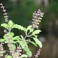

Plant Grimoire

Holy BasilHoly Basil (Ocimum tenuiflorum), known in Sanskrit as Tulsi, is one of the most revered plants in the Ayurvedic tradition. It is considered sacred in Hindu practice, where it is associated with Vishnu and kept in homes as a living altar plant, a source of protection, purification, and divine presence. Both its spiritual and medicinal identities are deeply intertwined.
Folk Tradition
Holy Basil's place in Hindu tradition is partly explained through myth. The goddess Tulasi was seduced by the god Vishnu. When she realized what had happened, Tulasi was horrified and took her own life. In response, Vishnu declared that she would be a reminder of faithfulness and purity, and would keep women from becoming widows. The holy basil that sprang from her ashes became a symbol of love, immortality, and protection. The Sanskrit name Tulasi means "the incomparable one."
Magickal Properties
Element: Water
Powers: Protection, Purification, Devotion, Spiritual Connection
Magickal Uses
Tulsi is one of the most spiritually significant plants in existence. In Hindu households, a potted Tulsi plant is kept near the entrance or in the courtyard as a constant source of blessing and protection. Daily care of the plant is considered an act of devotion. The leaves are used in religious offerings and rituals honoring Vishnu and Lakshmi.
In magickal practice, Holy Basil is used for protection, spiritual cleansing, and deepening a sense of sacred presence. Its calming effect on the nervous system makes it a natural companion for meditation and ritual work that requires stillness and focus.
Medicinal Uses
Holy Basil is classified as an adaptogen, meaning it helps the body regulate its response to stress. It works by supporting the adrenal system, calming the nervous system, and helping maintain equilibrium when the body is under physical or emotional strain. Unlike stimulating herbs, adaptogens do not push the body to perform: they support its ability to find balance on its own.
Tulsi has been used in Ayurvedic medicine for centuries to ease anxiety, reduce fatigue, and support respiratory health. It is also considered an immunomodulator, meaning it helps bring immune function into balance rather than simply stimulating it. As an adaptogen, it is appropriate for ongoing use over extended periods.
Culinary and Ritual Use
Parts used: Leaves, fresh or dried; flowers
Tulsi tea is a traditional remedy and daily practice in South Asian households. The leaves have a complex flavor, warmer and slightly clove-like compared to sweet basil, and are used in teas, tinctures, and simple infusions. In ritual contexts, the leaves are offered fresh.